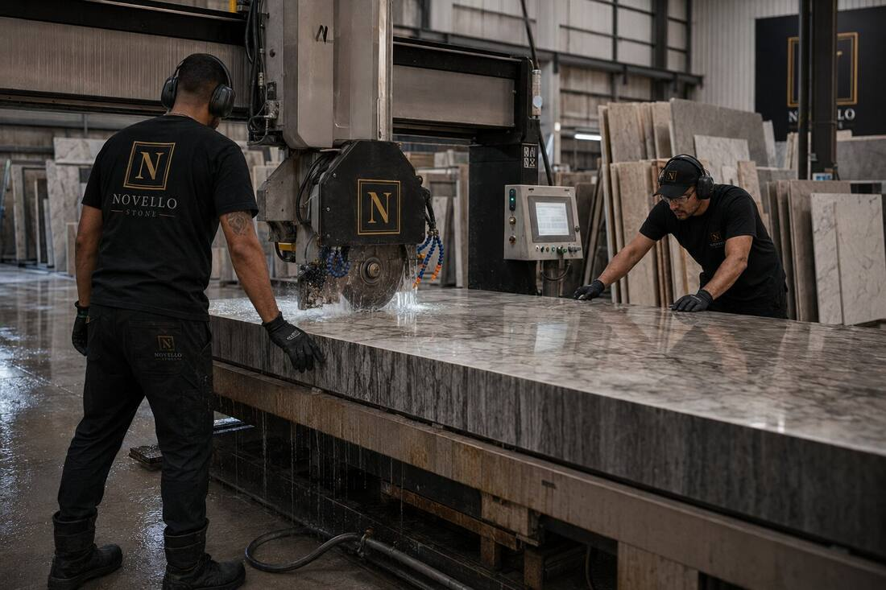

Marble
Granite
Engineered Stone
Quartzite
Porcelain Slab
Fabrication
Bridge saw operations and slab work for countertops, vanities, and custom stone surfaces.
Every fabrication job starts on-site, not on paper — we template the actual space, not an assumed one, so seams, cut-outs, and edge profiles are right the first time. Whether it's a full kitchen island in book-matched marble or a run of vanity tops in engineered stone, the slab is sourced, cut, and polished to the same standard: tight seams, clean edges, and a finish that holds up to daily use. Material is costed at confirmed supplier rates and billed separately from labour, so you always know exactly what you're paying for.
Why the site visit matters: Stone fabrication pricing depends on slab availability, seam placement, edge profile, and existing cabinetry or substrate condition — none of which can be priced accurately from a phone call. A short site visit gets you an exact, itemised quote instead of a wide guess.
- On-site templating and measurement
- Edge profiling and custom cut-outs
- Coordination of slab sourcing
- Professional installation and final fit
Pricing: Quoted after a site visit. Slab material is billed separately from labour, at confirmed supplier cost — so you always know exactly what you're paying for.